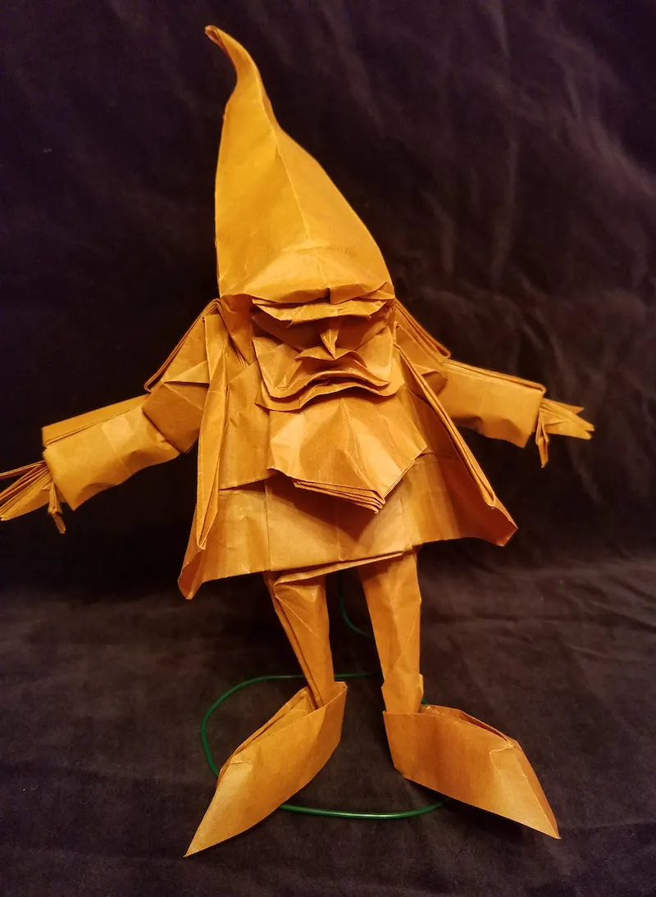
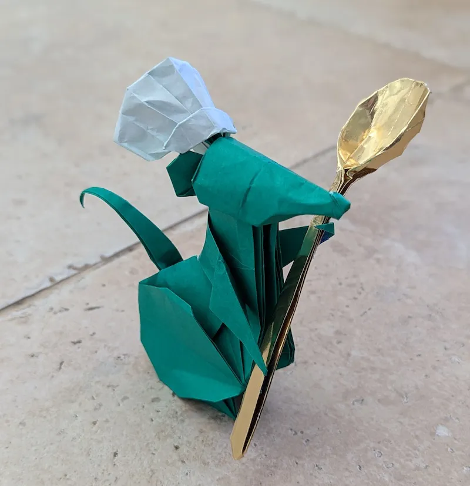
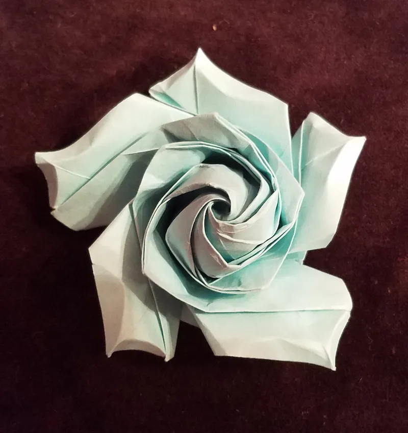
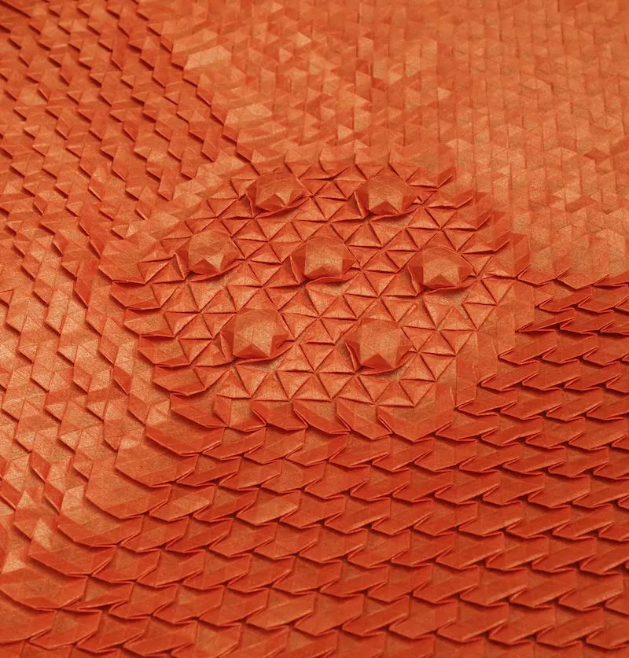
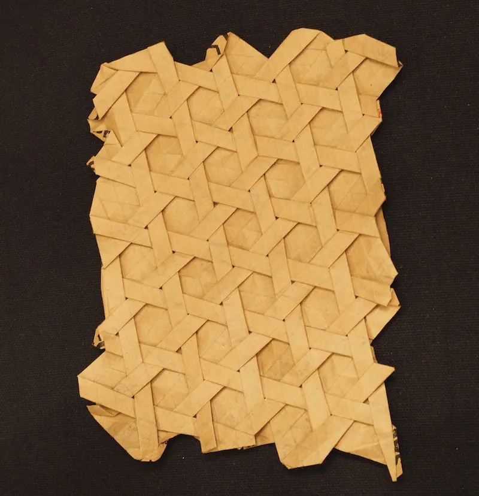
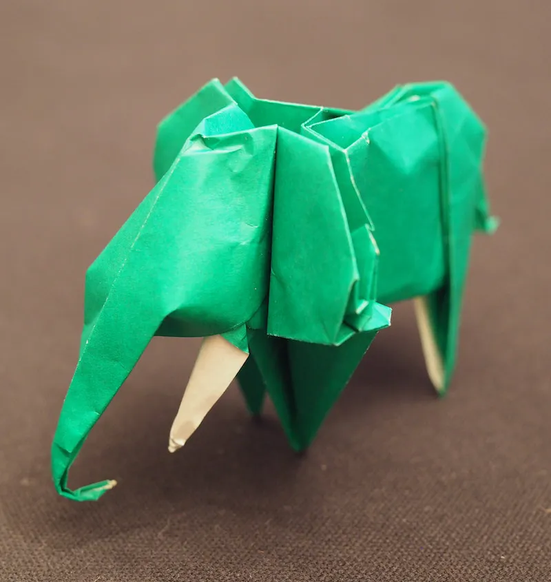
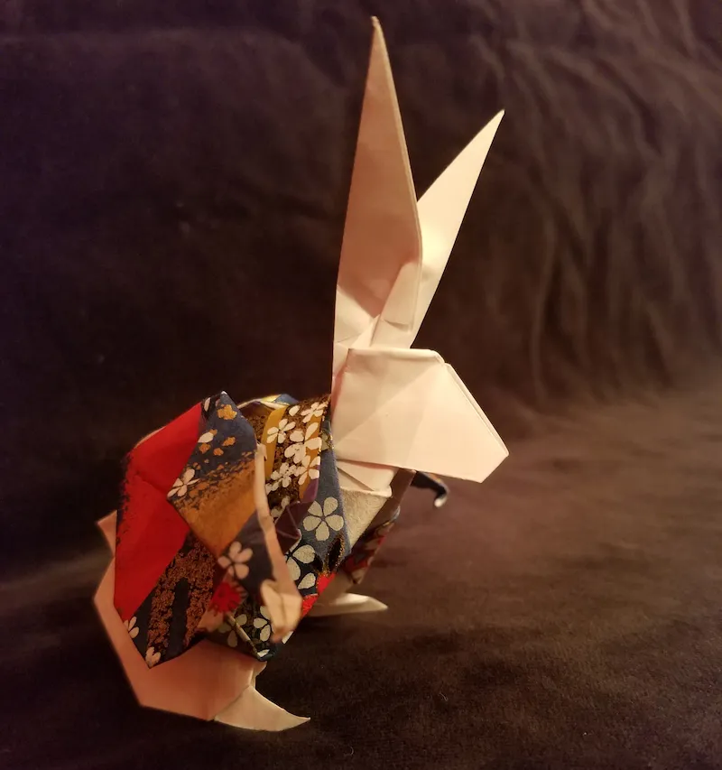

$TITLE
My designs
$MODEL_CAROUSEL
Notes on other people's models
dove card
by
Didier Boursin
basset hound
from
Origami Kaiken
pentagon rose
by
Naomiki Sato
My favorite models to fold

Dwarf
by Éric Joisel

Chef Rat
by Nguyen Hung Cuong

Pentagon Rose
by Naomiki Sato

Spread Hex
by Eric Gjerde

Basket Weave
by Eric Gjerde

Elephant
by John Montroll

Rabbit in Wonderland
by Matsuda Keigo